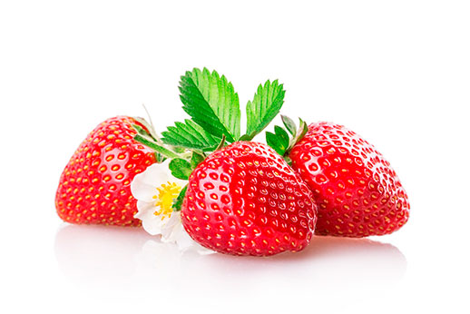
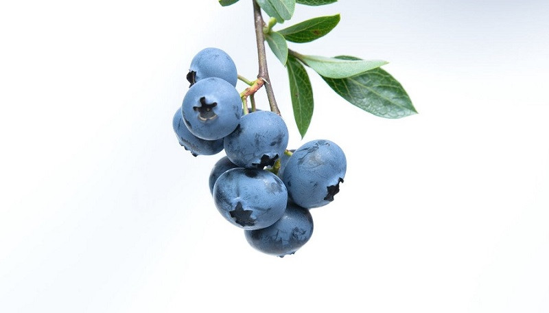
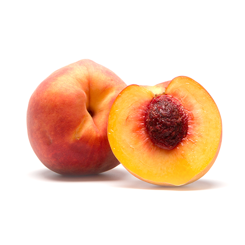

Yogurt de Frutilla
Origen: España
Beneficio: Alto en vitamina C, ayuda al sistema inmune.

Yogurt de Mango
Origen: India
Beneficio: Rico en antioxidantes, mejora la digestión.

Yogurt de Arándano
Origen: Estados Unidos
Beneficio: Bajo en calorías, mejora la memoria.

Yogurt de Durazno
Origen: China
Beneficio: Rico en fibra, ayuda al sistema digestivo.

Yogurt de Piña
Origen: Filipinas
Beneficio: Contiene bromelina, ayuda a la digestión de proteínas.